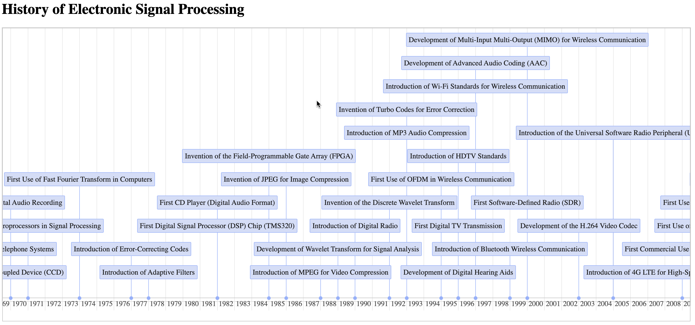

Timeline of Signal Processing

Prompt
Prompt
Create a timeline of the 50 most important milestones in the history of electronic signal processing. Use the vis.js format to store the events in a JSON format.
Response
Here is a timeline of 50 key milestones in the history of electronic signal processing, represented in the vis.js format:
1 2 3 4 5 6 7 8 9 10 11 12 13 14 15 16 17 18 19 20 21 22 23 24 25 26 27 28 29 30 31 32 33 34 35 36 37 38 39 40 41 42 43 44 45 46 47 48 49 50 51 52 53 54 | |
This JSON timeline can be loaded into a vis.js application to visualize the history of electronic signal processing.
You said:
Assume the file above is called events.json. Create a vis.js timeline viewer of these events. Create separate HTML and JavaScript file that will view the events using the vis.js timeline libraries.
ChatGPT said:
To view the events.json file in a vis.js timeline, you need two files: an HTML file to create the page and include the necessary libraries, and a JavaScript file to load and display the events.
Here's how to set it up:
1. HTML File (index.html)
1 2 3 4 5 6 7 8 9 10 11 12 13 14 15 16 17 18 19 20 21 22 23 | |
2. JavaScript File (timeline.js)
1 2 3 4 5 6 7 8 9 10 11 12 13 14 15 16 17 18 19 20 21 22 | |
3. Events JSON File (events.json)
Save the events.json file that you already have in the same directory as the HTML and JavaScript files.
Steps to Run:
- Ensure that you have all three files (
index.html,timeline.js, andevents.json) in the same directory. - Open the
index.htmlfile in a web browser. - The timeline should load, displaying the milestones in the history of electronic signal processing.
This setup leverages the vis.js timeline library, fetching the events.json file and rendering it in a timeline view.
You said:
How can I set the zoom level and keep it fixed?
ChatGPT said:
To set the zoom level and keep it fixed in vis.js, you can adjust the options object. Specifically, you can use the min and max options to define the boundaries of the timeline, and the zoomMin and zoomMax options to prevent users from zooming in or out.
Here's how you can modify the options object in your timeline.js file:
Updated timeline.js
1 2 3 4 5 6 7 8 9 10 11 12 13 14 15 16 17 18 19 20 21 22 23 24 25 26 | |
Explanation:
-
minandmax: These options set the minimum and maximum dates that are visible on the timeline. The user cannot pan or scroll beyond these dates.min: '1800': The earliest visible date is set to 1800.max: '2030': The latest visible date is set to 2030.-
zoomMinandzoomMax: These options control the minimum and maximum zoom levels. -
zoomMin: 31536000000: The minimum zoom level is set to 1 year, which means users can zoom in to view a single year. zoomMax: 315360000000: The maximum zoom level is set to 10 years, so users cannot zoom out beyond 10 years in the timeline.
You can adjust the zoomMin and zoomMax values based on how zoomed in or out you want the timeline to be.
This configuration will keep the zoom level fixed and prevent users from zooming beyond the specified levels.
You said:
I want the years to be about 1/4 inch apart and I don't want the users to ever zoom in to months. I want the initial view to be 1940 to 1980.
ChatGPT said:
ChatGPT
To achieve the following:
- Initial view from 1940 to 1980.
- Year spacing of about 1/4 inch apart.
- No zooming in to the month level (keep zoom level at the year level or higher).
You can adjust the options for the timeline as follows:
Updated timeline.js
1 2 3 4 5 6 7 8 9 10 11 12 13 14 15 16 17 18 19 20 21 22 23 24 25 26 27 28 29 30 31 32 33 34 35 36 37 38 39 40 41 42 43 | |
Key Changes Explained:
-
Initial view from 1940 to 1980: The
startandendparameters are set to'1940'and'1980'respectively to ensure the timeline initially displays this range. -
Year spacing of 1/4 inch apart: This is handled by setting the
timeAxis.scaleto'year'and usingstep: 1to show each year clearly. You can adjust the overall zoom levels if you need the visual spacing to change, but this will ensure consistent year intervals. -
No zooming in to months: The
rangechangeevent listener checks if the user tries to zoom in below 1 year (which would be months) and automatically resets the view to a yearly scale. The conditioninterval < 31536000000ensures that if the range becomes less than 1 year, it will lock it back to 1 year. -
Moveable and zoomable options: You can disable user panning by setting
moveable: falsebut still allow zooming within the specified year ranges.
This configuration will ensure the timeline starts with 1940 to 1980, shows about 1/4 inch between years, and prevents users from zooming in to the month level.
You said:
How can I set the initial zoom level to show a 40 year span?
ChatGPT said:
To set the initial zoom level to show a 40-year span when the timeline first loads, you can adjust the start and end properties in the options to cover the 40-year range. You don't need to rely on user interactions or event listeners for this. The start and end properties define the visible date range when the timeline is first rendered.
Here's how you can configure it:
Updated timeline.js
1 2 3 4 5 6 7 8 9 10 11 12 13 14 15 16 17 18 19 20 21 22 23 24 25 26 27 28 29 30 31 32 33 34 35 36 37 38 39 40 41 42 43 | |
Explanation:
-
Initial 40-year span (1940 to 1980):
- The
startis set to'1940'. - The
endis set to'1980'. This ensures that when the timeline first loads, it shows a 40-year period. -
Prevent zooming in to months:
-
The
rangechangeevent listener checks if the user zooms in beyond a 1-year level and resets it if necessary. -
Zoom Levels:
-
zoomMinis set to31536000000(1 year in milliseconds) to prevent zooming in closer than a year. zoomMaxis set to1261440000000(40 years in milliseconds), ensuring that the maximum zoom level covers a larger time span but starts with 40 years initially.
- The
With this setup, the timeline will load showing the desired 40-year range (from 1940 to 1980), and users won't be able to zoom in closer than the yearly level.